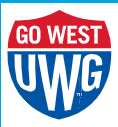
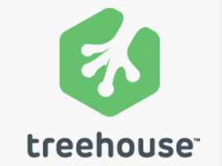

In 2006, I started learning code (HTML) in order to code a website for teams I was coaching. It was a hot mess of tables and inline styling. I eventually began dabbling in CSS and rewrote the entire website. There were some improvements but it was still a massive mess (almost 100 HTML files) of tables full of information that no one really asked for or needed. The numerous links (which mostly worked!) and the color scheme were frankly a lesson in 'How NOT to Make a Website!'
2006-2007: The 1st Iteration...
2007-2008: Go West!™
In 2007 I enrolled in the Masters program in CS at The University of West Georgia. I took 10 hours or prereqs in the summer because I didn't have an undergrad degree in CS. There were assigned readings and short projects that I was required to turn in weekly and I had to go on campus every week to meet with my advisor to go over the assignments. C# was the programming language that was used in the program and I learned that forgeting a ';' or a '.' anywhere in a line of code became a lengthy game of "find the error". I complete 2 semesters after the initial summer and had 19 hours earned toward my MS degree. My father was diagnosed with emphysma and lung cancer at the end of the spring semester and was given a year to live. I didn't register for the last year of the program because I knew I was going to have to take frequent trips back to St. Louis and I was also continuing to work full time as a teacher and coach working well over 60 hours a week. The night classes and assignment load was pretty difficult to manage. I decided to discontinue the program but remained interested in coding. I learned a ton while in the program: I actually liked database stuff (SQL) and HATED game development. I also learned there were a lot of resources available to continue to learn on my own.

2011-2017: I like FREE stuff!
After a bit of a break in learning I started over using Free Code Camp. I got back into the swing of things and whipped through the HTML stuff pretty fast. The CSS had changed a bit and I relearned it, Bootstrap was starting to become a thing, so I tried a bit of that as well. I made a few more practice websites and did some of the small projects in Free Code Camp to put together a portfolio. I also discovered Team TreeHouse. It was free for a bit, some of the best stuff was put behind a paywall. I paid for the membership and continued practicing. I did get through all the basics and got pretty far in the Javscript and started trying to pick up some other things. I basically got stuck in "tutorial hell" and kept switching to other new stuff before I really learned the stuff I had been working on. The online work became a bit unstructured for me. So I looked for a coding bootcamp.


2017-2017: Tech Talent South ("How to Waste $3K")
After a significant amount of online research I found a local coding bootcamp in Atlanta. It was about 20 minutes from my apartment and had good reviews. The bootcamp worked with Ruby and Ruby on Rails. The class met 2x a week. The other students were a nice mix or people who were also trying to work in tech. The location was nice and had some good resources. The class was mostly us quickly cutting and pasting sections of code in different files and making some pretty neat projects but there was very little in the way of learning what we were actually doing. I tried to learn some of the ins and outs of Ruby and Rails on my own so I could at least try to build some of my own projects but that was not easy to do in the short (4 months) span of the course. The course turned out to be a bit of a waste and left a bad taste in my mouth for Ruby and ROR; as well as bootcamps. A little note: I learned about LaunchCode around this time and inquired about doing LaunchCode online because I lived in Atlanta, but that was not an option at the time.
2023-?: I Should be Making 6 Figures by Now...
I moved back to St. Louis in 2018 and took a job teaching in Kirkwood Schools. Great place to work with awesome support but I still want to build neat stuff and work in tech. Just for giggles I googled 'LaunchCode' and here I am, relearning things and picking up some new stuff. The structure of being in class and having projects and practice is better for keeping me on track. Admittedly, I have slacked this month (June) because it is summer and summer is my 'slacker' month. The end of the program project is the part I look forward to, working with other students to build something will be totally new for me.